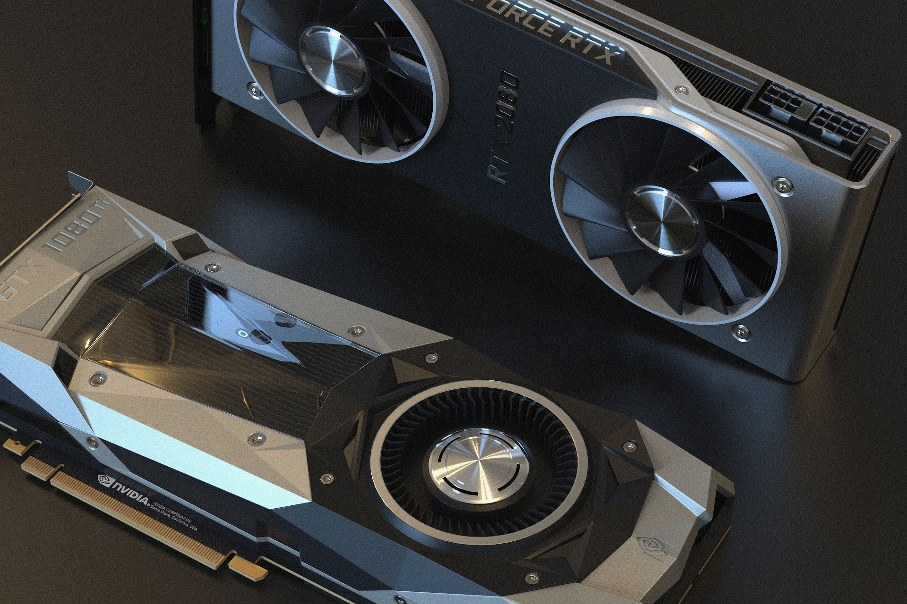
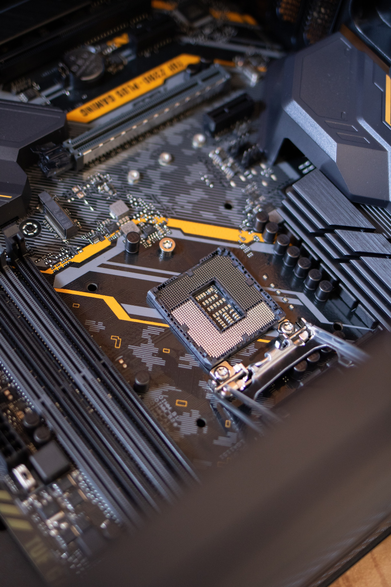

Placa de video (GPU)
A placa de vídeo é um dos principais componentes de qualquer PC, especialmente para computadores
voltados à jogos, e geralmente é um dos componentes mais caros do seu PC. Neste artigo, explicaremos
o que é uma placa gráfica e quais são suas funções.
O que é uma placa gráfica?
A placa gráfica é a peça do seu computador responsável por gerar as imagens que você vê na tela, seja
essa página da web, um documento no Word ou mesmo um filme ou um game. Essa peça também é conhecida
como unidade de processamento gráfico (ou GPU), e pode variar de "gráficos integrados" simples, que
fazem parte da placa-mãe ou do processador, a placas de expansão maiores e mais poderosas.
Essas placas de expansão - geralmente chamadas de placas "dedicadas" - são capazes de executar
tarefas mais poderosas do que as placas gráficas integradas, como gráficos de jogos, renderização
acelerada de vídeo ou até mesmo trabalhos não gráficos, como mineração de bitcoin.
O uso de uma placa gráfica dedicada custa mais consumo de energia, mais calor e mais espaço no
computador, e é por isso que raramente elas são utilizadas em ultrabooks e outros notebooks finos.
Mas as placas gráficas podem ficar desatualizadas com o passar do tempo. É improvável que uma placa
de 2010 consiga rodas os games de 2019 em configurações altas; portanto, se você não tiver certeza
se um jogo será executado no seu PC, convém comparar os requisitos mínimos ou recomendados com o
hardware que você possui atualmente.

Placa-mãe (MOBO)
A placa mãe não levaria esse nome à toa, certo? Ela é o sistema que une todos os componentes de um
computador, permitindo que eles funcionem de forma organizada. Sua peça dispõe de todos os caminhos
e redes que permitem a troca de informação entre todas as outras: processadores, memórias, sistemas
de armazenamento, placa de rede e tudo o mais.
Também é a placa mãe que alimenta todos esses componentes internos e mais os periféricos (como mouse,
webcam e teclado) com a energia que sai da tomada e entra na CPU por meio da fonte.
Por conta disso, é claro que ela desempenha um papel decisivo na competência de um sistema – mas
muitos fabricantes “maquiam” o computador com processadores e memórias de alto nível e uma placa mãe
mais fraca, já que suas especificações, em geral, não constam nas informações do produto.
É importante ficar atento a isso na hora de comprar ou até mesmo montar um computador: usuários
básicos podem abrir mão de algumas tecnologias, mas se você busca um PC gamer que possa rodar e
produzir conteúdos audiovisuais com alta qualidade, uma boa placa mãe é fundamental. É importante
saber qual é o seu soquete, a quantas memórias ela dá suporte, se ela sustenta hardwares mais
exigentes e, é claro, se ela aguenta bem os processos mais pesados.
Características físicas
A primeira placa mãe surgiu no ano de 1982, em um computador da marca IBM. Apesar da evolução da
tecnologia ao longo de todos esses anos, o seu formato continua praticamente o mesmo, apresentando o
soquete para se conectar com o processador, os slots que se encaixam nas demais peças de hardware e
as entradas da placa mãe para os periféricos.
É importante saber que o soquete de uma placa mãe não se encaixa em qualquer processador, por isso é
necessário garantir que haja compatibilidade entre as peças. Isso se dá porque cada tipo de
processador possui suas próprias características, que consistem em diferentes capacidades de
processamento, tecnologia de fabricação, consumo de energia entre outros.
Uma placa mãe é desenvolvida para aceitar determinados modelos de processadores, e, portanto, os que
usam soquetes diferentes não são compatíveis.

Processador (CPU)
Vamos começar pelo básico, o processador é a unidade central de processamento de um computador (CPU),
ele funciona como o cérebro do computador, pois interage e faz as conexões necessárias entre todos
os programas instalados. Neste processo, ele também interpreta as informações enviadas pelos
programas, realiza diversas operações, inclusive gerando a interface que nós interagimos quando
usamos um computador.
Os processadores são colocados na Placa-Mãe de um computador, através de soquetes e sua estrutura é
composta por bilhões de transistores.
Nucleos?
Em tempos mais antigos, processadores contavam apenas com um núcleo, contudo, atualmente um
processador pode ter vários núcleos para conseguir trabalhar melhor com uma grande variedade de
informações recebidas simultaneamente. Por essa razão vemos nomenclaturas como “Dual-Core” (2
núcleos), Quad-core (4 núcleos), podendo chegar em até 32 núcleos nos computadores de alta
performance.
Dessa forma, um computador consegue executar várias tarefas de uma vez, por isso você consegue abrir
um texto em programa, enquanto escuta música em outro e navega na internet. Isso para não citar as
tarefas menores que são executadas e nós não vemos.
O conceito do processador pode ser aplicado também nos video games modernos, que processam não apenas
os games que você está jogando, mas também as interfaces de menus dos consoles, aplicativos de
streaming e outros recursos disponíveis. O mesmo pode ser dito sobre processadores de nossos
smartphones que nos permitem realizar diversas tarefas ao mesmo tempo.

Memoria RAM
O conceito pode ser extraído do próprio nome "memória RAM". A sigla, originada da língua inglesa,
significa random access memory— que, no bom português, quer dizer memória de acesso aleatório. A
tradução literal entrega pistas sobre a função do componente, mas não é o suficiente para
conceituá-lo.
O que é memoria RAM?
A memória RAM é responsável pelo armazenamento de informações necessárias para a execução de
aplicativos em uso e para o funcionamento do próprio sistema operacional. Essa peça, inclusive,
facilita o trabalho do processador que pode acessar os dados essenciais mais rapidamente.
A partir disso, podemos classificar a memória RAM como um espaço temporário de trabalho já que, após
a conclusão de uma tarefa, os arquivos são transferidos para o HD ou SSD, que são essencialmente
mais lentos e possuem aplicações a longo prazo no sistema. O armazenamento feito pelo hardware,
aliás, ocorre de acordo com a atividade do usuário, isto é, de modo não-sequencial — daí vem o nome
"memória de acesso aleatório".
Em termos práticos, a memória RAM determina quantos aplicativos o usuário pode acessar
simultaneamente, bem como a velocidade de carregamento de páginas e arquivos. Assim, quanto mais
espaço o dispositivo possui, mais fluida será a execução de programas.
O que é DDR?
DDR é uma sigla que acompanha alguns modelos de memória RAM. Originada do inglês, a abreviação
significa double data rate ou dupla taxa de transferência.
Como o próprio nome sugere, a presença de DDR indica que o componente transfere o dobro de
informações por ciclo de clock. Existem inúmeras gerações da tecnologia e, claro, as mais recentes
possuem taxas de transferências maiores. Nessa lógica, quanto maior o número que acompanha a sigla
DDR, mais potente será a memória RAM.

Fonte de alimentação (PSU)
A fonte de alimentação, conhecida como PSU (do inglês Power Supply Unit ou Unidade de Alimentação de
Energia), é o componente que recebe a energia fornecida pela rede eléctrica doméstica.
A fonte de alimentação é responsável por converter a voltagem da energia eléctrica, que chega pelas
tomadas em voltagens menores, capazes de ser suportadas pelos componentes do computador.
Como identificar a fonte no seu computador?
Para identificar a fonte de alimentação no seu computador, basta localizar o cabo que está ligado a
uma tomada.
Depois, no interior do caixote (gabinete), basta procurar a peça que recebe esse cabo.

Disco rígido (HD)
O HD é a memória do computador propriamente dita. Na configuração de um computador, é o número maior. Por exemplo: se o PC tem 2 GB/320 GB, ele tem a memória RAM (memória volátil que se apaga ao desligar o computador) de 2 GB e HD (memória que armazena arquivos e programas e não se apaga quando o computador é desligado) de 320 GB.
O primeiro HD para computador, criado pela IBM em 1956, tinha capacidade máxima de 5 MB, o que equivalia a mais ou menos 4 disquetes. Os HDs, em média, têm 500GB. Mas, vale lembrar que hoje temos HD de até 2TB!
Para saber a capacidade do HD, basta clicar em Iniciar, depois na pasta Meu Computador. Lá aparecerá um dispositivo, em geral com o nome do sistema operacional, seguido de (C:), chamado muitas vezes de Disco C. Esse é o HD para PC. Abaixo dele estará escrito XXX GB de 465 GB, por exemplo, o primeiro número (XXX) é o total já usado, o segundo (465) é o espaço total do HD.
E é nesse segundo número que habita uma das maiores dúvidas entre as pessoas que não são profissionais de informática, o tamanho real da capacidade de memória de arquivamento do computador, pois quando compramos um computador de 500 GB, por exemplo, ele aparentemente só tem 465 GB. Então, qual exatamente é o espaço livre do HD?
O que acontece é uma diferença no padrão de medidas usado pelos fabricantes de computadores e de sistemas operacionais.
Com isso, acontecem pequenas diferenças quando você visualiza a capacidade no computador. Mas nada que afete diretamente o seu armazenamento.
Resulmindo: é ruim, não compre um HD. Compre um ssd 🤌

Disco Hígido (SSD)
A memória SSD é uma hardware de armazenamento de dados usados em computadores mais recentes. É uma tecnologia muito diferente do HD, ou seja, disco rígido. Isso porque não possui discos ou agulhas no processo de gravação mecânica de dados. É uma tecnologia eletrônica e bem complexa.
Por isso, como é eletrônica, a memória SSD oferece mais velocidade e dinamismo no processamento de dados, podendo ocorrer em frações de segundo. Permite abrir programas e executá-los de forma mais ágil e segura, sem grandes riscos.
Qual a diferença entre HD e SSD?
São tecnologias muito distintas. Enquanto o HD utiliza cabeças de leitura e gravação para fazer operações em discos magnéticos, de modo mecânico, a memória SSD é mais rápida, pois processa dados eletronicamente, como vermos adiante.
O SSD vem se popularizando muito sobre o HD, pois com seu avanço, o preço diminuiu bastante. Ou seja, é possível otimizar o seu notebook ou PC também com esta tecnologia, que antes era pouco acessível.